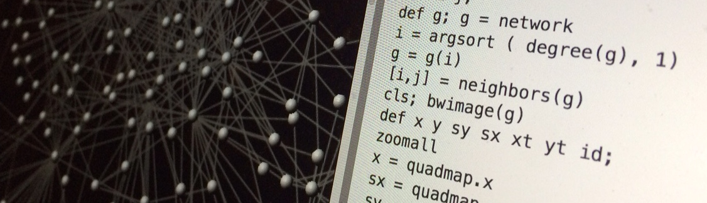
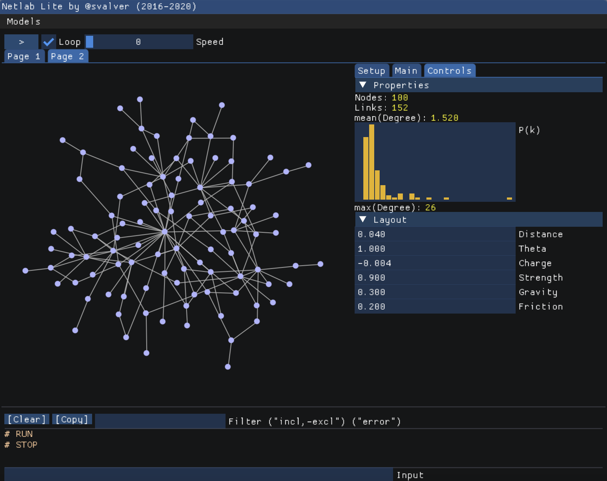

Projects

Netlab: Visualization and Analysis of Complex Networks
This research has been supported by our own software platform (so-called Netlab) for the analysis, modeling and visualisation of complex networks. This toolkit has been reused in many publications during the last decade. Renderings produced with Netlab have been featured in popular media like New York Times Magazine (March 12th, 2006) and a special Nature issue on Ecological Complexity (vol. 442 no. 7100, July 20th 2006).
Check here for an example of our network approach to study the large-scale evolution of programming languages. Check here for an example of real-time rendering in our Netlab tool.NETLAB WEB (2020)

Click here to access Netlab Lite, a network programmable modeling environment. This is a compact, on-line version of the Netlab platform that I have developed over the years. Netlab allows students to program their own network models and perform common analyses, only using their web brower (requires WebGL, Chrome and/or Firefox is recommended).Virtual Reality Interfaces for Network Visualization (2020-2021)

BiMat: Analysis of Bipartite Ecological Networks
BiMat is an open-source MATLAB library whose main function is the analysis of modularity and nestedness in bipartite ecological networks. BiMat has been developed in collaboration with Cesar Flores, Timothee Poisot and Joshua Weitz. Its main features include: modularity and nestedness calculation, diversity calculation using Shannon and Simpson's indexes, different null models for the creation of random bipartite networks, and statistics of the network.
Download the source code here and the documentation here.
Chimera: Physics-based Simulations
To fulfil our vision, we propose the idea of "programmable life systems" that combine evolutionary systems with physics simulation. An example of this is our Chimera system (read more). In Chimera, evolutionary dynamics are modelled with computer simulations that explicitly consider the physical embodiment of natural populations. Current computational tools are limited because they do not fully capture the genotype-phenotype map. Our system offers to possibility to design new functions on top of a realistic computational model that takes into account emergent properties. In the future, this tool can be adapted to simulate micro-fluidics experiments and testing hypothesis of tumour growth and angiogenesis.